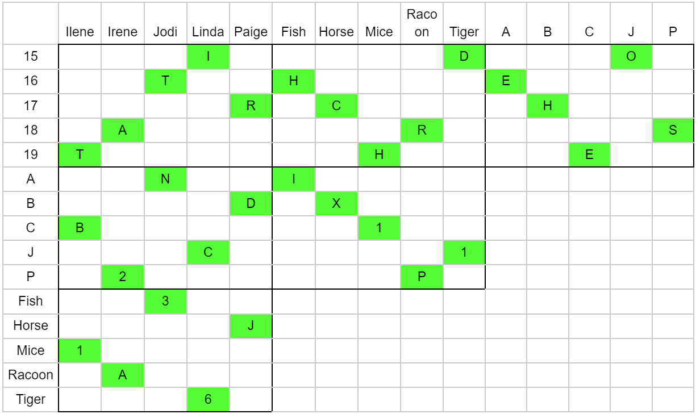

Solution: Disney
Answer: LEWIS
Written by Jonathan
This together puzzle makes it very explicit that we are interested in 2 other puzzles, and directly gives solvers the gimmick of this round: teams need to use 2 other puzzles in this hunt to solve together round puzzles. Both components of this puzzle use the same 5 movies and their characters: Cinderella, Beauty and the Beast, Aladdin, The Little Mermaid and Pocahantas.
The Einstein puzzle can be resolved, with the names being the voices of the Disney princess/queen in the movie, the age being the canonical age of the princess character they play, the animal being their sidekick, and the initial being the first letter of the princess, as follows, to give the phrase ID OTHER CHARS THEN IDX B 1 C12 P 3 J 1 A 6.

The initials are the same ones used in the Zebra puzzle, and we can parse this as both an ordering and an index.
The books minipuzzles’ answers each represent a character from these 5 movies:
Perjured Parrot: Iago from Aladdin, the parrot of the villain, Iago is known to spout all kinds of nonsense
Spurious Spinster: Vanessa from The Little Mermaid (Ursula’s alter ego), who pretended to be a fake unmarried woman to make Eric forget Ariel
Crooked Candle: Lumiere from Beauty and the Beast, yes technically a candelabra, yes technically not crooked, but Lumiere’s arms are normally bent when dancing.
Angry Mourner: Powhatan from Pocahantas, who was very angry at Kocoum’s death
Dangerous Dowager: Lady Tremaine from Cinderella, who was basically an evil stepmother
| Given order (from re-solved Einstein) | Given index (from re-solved Einstein) | Actual Disney Princess | New Character | Indexed letter |
|---|---|---|---|---|
| B | 1 | Belle | Lumiere | L |
| C | 12 | Cinderella | Lady Tremaine | E |
| P | 3 | Pocahantas | Powhatan | W |
| J | 1 | Jasmine | Iago | I |
| A | 6 | Ariel | Vanessa | S |
Lastly, we can then index the numbers into the characters, this gives us the final answer LEWIS.
Author's Notes
If teams still have not understood the together round mechanic by this point, they will have 3 puzzles sitting completely unsolvable, which would not be ideal given the unlock width, and as such we explicitly tell teams that these puzzles are related.
This set went through so many iterations, at one point selective sounds detection was also a part of this Together puzzle. There were many many rejected Perry Mason associations, including Velvet Claws (for Ursula, but could have applied to Sebastian), Ice-Cold Hands (for Elsa, but could have applied at one point in the movie to Anna), Fenced In Woman (for Rapunzel, but not really a fence), Restless Redhead/Queenly Contestant (for Merida, but rejected as there were multiple redheads and then rejected for not wanting to use the princesses themselves), Daring Decoy (for Vanessa, but she wasn't really a decoy). By extension, this meant many many rewrites of Yin Yang puzzles and Many Blanks indices.
This Communiter set stemmed from a bit of personal frustration when some puzzles do not use all the information provided. (Sorry, the zebra puzzle is a bad example too!) I was discussing with someone about certain puzzle types where teams would not give it too much thought when certain information went unused, and Einstein puzzles came up. Ideally teams miss the Disney aha on the first pass and groan at it later. I hope I made the Zebra puzzle straightforward enough that most teams would not give it a second thought :) If your team was really observant and noticed the hidden message in Zebra puzzle early, hopefully that would have given your team a huge leg up in terms of understanding the Communiter round mechanic.